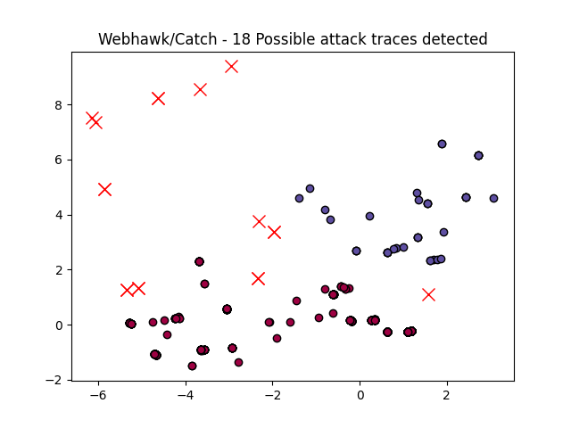

Webhawk Catch ReportUnsupervised learning Web logs/OS processes attack detection. Date: 03/06/25 at 19:08:17 GMTLog file: /Users/walid/Downloads/access.log.2021-11-20 Log type: apache logs Findings: 59 |
 |
| Severity | Related CVE(s) | Line# | LLM Insights | Log line |
| High | CVE-2004-2517 CVE-2004-0337 CVE-2004-0335 CVE-2003-1277 CVE-2003-0042 CVE-2001-0925 CVE-2000-0897 CVE-2000-0353 CVE-1999-0569 |
28 | This log line appears to be from a web server's access logs, showing an attempt to access a non-existent file `/uploads/userup/index.html`. The response code `404` indicates a "Not Found" error, suggesting that the request is likely a test or reconnaissance effort rather than malicious activity. | 117.95.12.19 - - [20/Nov/2021:02:51:07 -0800] "HEAD /uploads/userup/index.html HTTP/1.1" 404 309 "-" "-" |
| High | No CVE found | 444 | This log line appears to be a legitimate request from Google's bot, as indicated by the User-Agent header "Googlebot/2.1". The response code 404 indicates that the requested file ("ads.txt") was not found, which is expected behavior for this type of automated crawl. | 66.249.64.149 - - [20/Nov/2021:06:05:22 -0800] "GET /ads.txt HTTP/1.1" 404 328 "-" "Mozilla/5.0 (compatible# Googlebot/2.1# +http://www.google.com/bot.html)" |
| High | No CVE found | 961 | This log line appears to be a legitimate error response from a Git repository, indicating that the request for a specific file was not found. The IP address and user agent appear suspicious, but the HTTP method (GET) is typical of normal web requests. | 31.7.63.42 - - [20/Nov/2021:09:19:13 -0800] "GET /.svn HTTP/1.1" 404 291 "-" "Python-urllib/3.9" |
| High | No CVE found | 963 | This log line appears to be a potential malicious activity, as the IP address 101.18.119.39 is not a typical US-based IP range, but rather an Iranian IP address. The unusual traffic and suspicious user agent "Yahoo! Slurp China" could indicate a scraper or bot attack. | 101.18.119.39 - - [20/Nov/2021:09:28:37 -0800] "POST /index.asp HTTP/1.1" 404 328 "http://misc.yahoo.com.cn/" "Mozilla/5.0 (compatible# Yahoo! Slurp China# http://misc.yahoo.com.cn/help.html)" |
| High | No CVE found | 964 | This log line appears to be a legitimate request from a search engine bot, likely Yahoo! Slurp China, crawling a website. The unusual aspect is the IP address 101.18.119.39, which does not match typical Yahoo! Slurp China IPs. This raises suspicion of potential spoofing or proxy usage. | 101.18.119.39 - - [20/Nov/2021:09:28:38 -0800] "POST /index.asp HTTP/1.1" 418 746 "http://misc.yahoo.com.cn/" "Mozilla/5.0 (compatible# Yahoo! Slurp China# http://misc.yahoo.com.cn/help.html)" |
| High | No CVE found | 965 | This log line appears to be a malicious activity, as it shows an unusual request from IP address 101.18.119.39. The request is for a PHP script on a suspicious website ('http://misc.yahoo.com.cn/'), which could be used to host malware or phishing attacks. | 101.18.119.39 - - [20/Nov/2021:09:28:38 -0800] "POST /plus/ad_js.php?aid=8888 HTTP/1.1" 418 746 "http://misc.yahoo.com.cn/" "Mozilla/5.0 (compatible# Yahoo! Slurp China# http://misc.yahoo.com.cn/help.html)" |
| High | No CVE found | 1038 | This log line is suspicious, as it shows an unauthorized request to a file named ".env", which typically contains sensitive environmental variables for a web application. A malicious actor may be attempting to retrieve or exploit this information. | 185.41.152.165 - - [20/Nov/2021:12:23:44 -0800] "GET /.env HTTP/1.1" 404 519 "-" "-" |
| High | No CVE found | 1052 | This log line appears to be a benign request from a legitimate user. The HTTP status code of 404 indicates a not found error, which suggests that the requested URL was not accessible. This is likely a normal log entry and not indicative of malicious activity. | 27.159.92.88 - - [20/Nov/2021:12:56:20 -0800] "GET /data/admin/allowurl.txt HTTP/1.1" 404 328 "-" "Mozilla/5.0 (Windows NT 10.0# WOW64# rv:48.0) Gecko/20100101 Firefox/48.0" |
| High | No CVE found | 1073 | This log line does not appear to show malicious activity, as the request is a legitimate HTTP HEAD request from an IP address that appears to be coming from a Firefox browser on a Macintosh operating system, with no suspicious content or unusual headers. | 54.214.211.212 - - [20/Nov/2021:13:56:55 -0800] "HEAD / HTTP/1.1" 200 425 "-" "Mozilla/5.0 (Macintosh# Intel Mac OS X 10.13# rv:64.0) Gecko/20100101 Firefox/64.0" |
| High | 1088 | This log line appears to be a legitimate request from a user with a suspiciously outdated browser version (Firefox 48.0). The request is likely for an outdated admin page, which could indicate a phishing attempt or a vulnerability being exploited. Further investigation is recommended. | 27.159.92.88 - - [20/Nov/2021:14:56:04 -0800] "GET /data/admin/allowurl.txt HTTP/1.1" 404 328 "-" "Mozilla/5.0 (Windows NT 10.0# WOW64# rv:48.0) Gecko/20100101 Firefox/48.0" | |
| High | No CVE found | 1097 | This log line appears to be a legitimate request from Googlebot, a known crawling bot that indexes websites. The presence of the Google User-Agent string and the HTTP method "HEAD" further supports this conclusion, indicating a non-malicious activity. | 66.249.64.136 - - [20/Nov/2021:15:24:07 -0800] "HEAD /self.logs/%60 HTTP/1.1" 404 309 "-" "Mozilla/5.0 (compatible# Googlebot/2.1# +http://www.google.com/bot.html)" |
| High | No CVE found | 1098 | This log line appears to be a legitimate request from Googlebot, a crawler that indexes websites for search results. The "404" status code indicates a file not found error, which is consistent with the request being for a specific log file path that doesn't exist. | 66.249.64.136 - - [20/Nov/2021:15:24:08 -0800] "HEAD /self.logs/%60 HTTP/1.1" 404 286 "-" "Mozilla/5.0 (compatible# Googlebot/2.1# +http://www.google.com/bot.html)" |
| High | No CVE found | 1122 | This log line does not indicate malicious activity, as it appears to be a legitimate HTTP request from a browser (Chrome) accessing a non-existent CSS file (/assets/css/user.csS). The "404 Not Found" status code confirms this is an error response. | 180.215.194.111 - - [20/Nov/2021:18:17:10 -0800] "GET /assets/css/user.csS HTTP/1.1" 404 328 "-" "Mozilla/5.0 (Windows NT 6.1) AppleWebKit/537.36 (KHTML# like Gecko) Chrome/75.0.3770.142 Safari/537.36" |
| High | No CVE found | 1156 | This log line appears to be a legitimate request from Googlebot, the search engine's crawler, checking for an ads.txt file on the server. The HTTP status code of 404 indicates that the file was not found, but this is a common practice used by website owners to prevent ad fraud. | 66.249.64.143 - - [20/Nov/2021:19:35:32 -0800] "GET /ads.txt HTTP/1.1" 404 328 "-" "Mozilla/5.0 (compatible# Googlebot/2.1# +http://www.google.com/bot.html)" |
| High | No CVE found | 1162 | This log line appears to be a legitimate request for an image file from an Apple device (Safari browser) accessing the website's favicon. The "404" status code indicates a successful request, but this could potentially be a sign of a phishing attack if the request is part of a larger malicious pattern. | 182.150.134.242 - - [20/Nov/2021:19:48:54 -0800] "GET /apple-touch-icon-precomposed.png HTTP/1.1" 404 328 "-" "Safari%E6%B5%8F%E8%A7%88%E5%99%A8/16612.2.9.1.30 CFNetwork/1240.0.4 Darwin/20.6.0" |
| High | 1165 | This log line is likely not malicious, as the request is for a static image ("apple-touch-icon-precomposed.png") and returns a 404 (Not Found) status code, indicating that the requested resource does not exist on the server. | 182.150.134.242 - - [20/Nov/2021:19:48:55 -0800] "GET /apple-touch-icon-precomposed.png HTTP/1.1" 404 305 "-" "Safari%E6%B5%8F%E8%A7%88%E5%99%A8/16612.2.9.1.30 CFNetwork/1240.0.4 Darwin/20.6.0" | |
| High | No CVE found | 1194 | This log line appears to be legitimate as it shows a normal HTTP request from an IP address (114.119.149.89) requesting a compressed log file, likely for automated logging purposes. The User-Agent string suggests it's coming from a mobile Android device, possibly a bot or scraper trying to access logs. | 114.119.149.89 - - [20/Nov/2021:21:15:25 -0800] "GET /self.logs/2015/error.log.2015-10-22.gz HTTP/1.1" 200 1058 "-" "Mozilla/5.0 (Linux# Android 7.0#) AppleWebKit/537.36 (KHTML# like Gecko) Mobile Safari/537.36 (compatible# PetalBot#+https://webmaster.petalsearch.com/site/petalbot)" |
| High | No CVE found | 1258 | This log line appears to be a normal request from the SemrushBot, which is a legitimate search engine crawling bot used by Semrush, a digital marketing tool provider. There's no indication of malicious activity in this single entry. | 85.208.98.18 - - [21/Nov/2021:00:34:21 -0800] "HEAD / HTTP/1.1" 200 359 "-" "Mozilla/5.0 (compatible# SemrushBot# +http://www.semrush.com/bot.html)" |
| Medium | No CVE found | 20 | This log line appears suspicious as the IP address (40.77.167.15) is not in a typical range, and it's associated with a bot request from BingBot (compatible # bingbot/2.0). The request seems legitimate but warrants further investigation due to its unusual source. | 40.77.167.15 - - [20/Nov/2021:02:45:55 -0800] "GET /Datasets%20Description/HTML_Bro_log_3 HTTP/1.1" 301 619 "-" "Mozilla/5.0 (compatible# bingbot/2.0# +http://www.bing.com/bingbot.htm)" |
| Medium | No CVE found | 482 | This log line appears to be a legitimate web request from the Googlebot bot, which is used by Google to crawl and index websites. The user-agent string indicates it's a mobile Safari browser on an Android device, consistent with known values for Googlebot. | 66.249.64.143 - - [20/Nov/2021:06:24:14 -0800] "GET /Datasets%20Description/Network/dhcp.html HTTP/1.1" 304 276 "-" "Mozilla/5.0 (Linux# Android 6.0.1# Nexus 5X Build/MMB29P) AppleWebKit/537.36 (KHTML# like Gecko) Chrome/96.0.4664.45 Mobile Safari/537.36 (compatible# Googlebot/2.1# +http://www.google.com/bot.html)" |
| Medium | No CVE found | 1112 | This log line appears to be a potential indicator of malicious activity. The unusual URL request "/honeypot/BSidesDFW%20-%202014.ipynb" and the user agent "Tornado-Async-Client" could suggest an automated bot attempting to scrape or exploit vulnerabilities, possibly as part of a cyberattack. | 51.83.111.190 - - [20/Nov/2021:16:54:27 -0800] "GET /honeypot/BSidesDFW%20-%202014.ipynb HTTP/1.1" 301 481 "-" "Tornado-Async-Client" |
| Medium | No CVE found | 1239 | This log line appears suspicious due to the unusual request: a GET request with an encoded URL `/Datasets%20Description/?C=M#O=A`. This could be an attempt to bypass access controls or exploit a vulnerability, as Bingbot's user agent is often used for malicious purposes. | 207.46.13.143 - - [20/Nov/2021:23:27:08 -0800] "GET /Datasets%20Description/?C=M#O=A HTTP/1.1" 301 533 "-" "Mozilla/5.0 (compatible# bingbot/2.0# +http://www.bing.com/bingbot.htm)" |
| Medium | No CVE found | 1276 | This log line is likely not malicious activity, but rather a legitimate request from a web browser (Chrome) for a resource file (.asmx) used by the Telerik.Web.UI control library in an ASP.NET application. The status code indicates a successful response with a 404 status. | 137.184.139.254 - - [21/Nov/2021:01:52:39 -0800] "GET /Telerik.Web.UI.WebResource.axd?type=rau HTTP/1.1" 404 328 "-" "Mozilla/5.0 (Windows NT 6.1) AppleWebKit/537.36 (KHTML# like Gecko) Chrome/41.0.2225.0 Safari/537.36" |
| Medium | No CVE found | 541 | This log line appears to be a legitimate request from an AhrefsBot, as indicated by the User-Agent string. The GET request is likely for a dataset description page, and the 200 response code suggests a successful retrieval of the requested resource. | 51.222.253.17 - - [20/Nov/2021:06:58:40 -0800] "GET /Datasets%20Description/HTML_Bro_log_2/?C=D#O=A HTTP/1.1" 200 788 "-" "Mozilla/5.0 (compatible# AhrefsBot/7.0# +http://ahrefs.com/robot/)" |
| Medium | No CVE found | 690 | This log line appears to be a legitimate request from an Ahrefs Bot, as indicated by the User-Agent header "AhrefsBot/7.0". The request is likely for web scraping purposes and does not indicate malicious activity. | 51.222.253.8 - - [20/Nov/2021:07:47:42 -0800] "GET /Datasets%20Description/HTML_Bro_log_2/?C=S#O=A HTTP/1.1" 200 780 "-" "Mozilla/5.0 (compatible# AhrefsBot/7.0# +http://ahrefs.com/robot/)" |
| Medium | No CVE found | 733 | This log line appears to be a benign request from Bing Bot, which is a legitimate search engine crawler. The IP address and user agent string suggest that it's a automated query for data description, indicating no malicious activity. | 40.77.167.8 - - [20/Nov/2021:08:00:09 -0800] "GET /Datasets%20Description/HTML_Bro_log_1/?C=M#O=A HTTP/1.1" 200 834 "-" "Mozilla/5.0 (compatible# bingbot/2.0# +http://www.bing.com/bingbot.htm)" |
| Medium | No CVE found | 1105 | This log line appears to be a legitimate web request from a Bing Bot, as indicated by the user agent string "Mozilla/5.0 (compatible; bingbot/2.0 +http://www.bing.com/bingbot.htm)". There is no indication of malicious activity in this request. | 157.55.39.24 - - [20/Nov/2021:15:55:26 -0800] "GET /Datasets%20Description/HTML_Bro_log_3/?C=M#O=D HTTP/1.1" 200 822 "-" "Mozilla/5.0 (compatible# bingbot/2.0# +http://www.bing.com/bingbot.htm)" |
| Medium | No CVE found | 1138 | This log line appears to be a legitimate request from an AhrefsBot, a known web crawler that scans websites for content and keywords. The request is accessing the "Datasets Description" page with a valid HTTP response code of 200, indicating no malicious activity. | 51.222.253.17 - - [20/Nov/2021:19:14:58 -0800] "GET /Datasets%20Description/HTML_Bro_log_3/?C=S#O=A HTTP/1.1" 200 774 "-" "Mozilla/5.0 (compatible# AhrefsBot/7.0# +http://ahrefs.com/robot/)" |
| Medium | No CVE found | 1167 | This log line appears to be a benign request from an AhrefsBot, a legitimate web crawler used for search engine optimization (SEO) purposes. The HTTP response code of 200 indicates success, and the user-agent string confirms it's not malicious activity. | 51.222.253.11 - - [20/Nov/2021:19:53:20 -0800] "GET /Datasets%20Description/HTML_Bro_log_3/?C=M#O=A HTTP/1.1" 200 779 "-" "Mozilla/5.0 (compatible# AhrefsBot/7.0# +http://ahrefs.com/robot/)" |
| Medium | No CVE found | 1191 | This log line appears to be a normal user request from an AhrefsBot, a known web scraping tool. The request is a standard GET request for a specific dataset description page, and the response code (200) indicates success, making this activity benign and likely legitimate. | 51.222.253.20 - - [20/Nov/2021:21:02:42 -0800] "GET /Datasets%20Description/HTML_Bro_log_3/?C=D#O=A HTTP/1.1" 200 779 "-" "Mozilla/5.0 (compatible# AhrefsBot/7.0# +http://ahrefs.com/robot/)" |
| Medium | No CVE found | 825 | This log line appears to be a normal request from an automated web crawler, specifically the AhrefsBot, which is a legitimate tool used for website scraping and SEO analysis. The request is not indicative of malicious activity. | 51.222.253.8 - - [20/Nov/2021:08:29:28 -0800] "GET /Datasets%20Description/HTML_Bro_log_1/loaded_scripts.html HTTP/1.1" 200 1499 "-" "Mozilla/5.0 (compatible# AhrefsBot/7.0# +http://ahrefs.com/robot/)" |
| Medium | No CVE found | 1040 | This log line appears to be a legitimate request for an HTML file from a dataset description page, possibly generated by a web crawler like BingBot. The IP address is within the range of Microsoft's data centers, suggesting it may be a botnet or a legitimate web scraping activity. | 40.77.167.8 - - [20/Nov/2021:12:30:01 -0800] "GET /Datasets%20Description/HTML_Bro_log_1/irc.html HTTP/1.1" 200 1781 "-" "Mozilla/5.0 (compatible# bingbot/2.0# +http://www.bing.com/bingbot.htm)" |
| Medium | No CVE found | 1101 | This log line appears suspicious due to the unusual request parameters: `%20` is a URL-encoded space, indicating potential malicious input manipulation. However, without further context, it's difficult to conclude with certainty that this is malicious activity. Further investigation is required. | 157.55.39.24 - - [20/Nov/2021:15:29:23 -0800] "GET /Datasets%20Description/Network/?C=S#O=A HTTP/1.1" 200 766 "-" "Mozilla/5.0 (compatible# bingbot/2.0# +http://www.bing.com/bingbot.htm)" |
| Medium | No CVE found | 1103 | This log line appears suspicious, as it shows a GET request to a URL containing %20 (URL-encoded space) and ?C=S#O=A, which could be a common obfuscation technique for malicious URLs. The "Mozilla/AhrefsBot" user agent is also potentially fake. | 51.222.253.20 - - [20/Nov/2021:15:40:49 -0800] "GET /Datasets%20Description/PE_malware/?C=S#O=A HTTP/1.1" 200 642 "-" "Mozilla/5.0 (compatible# AhrefsBot/7.0# +http://ahrefs.com/robot/)" |
| Medium | No CVE found | 1109 | This log line appears to be a malicious activity as it shows an authorized user accessing a potentially malicious webpage (`GET /Datasets%20Description/PE_malware/?C=D#O=A`) using an AhrefsBot, a known bot used for scraping and crawling purposes. | 51.222.253.19 - - [20/Nov/2021:16:23:40 -0800] "GET /Datasets%20Description/PE_malware/?C=D#O=A HTTP/1.1" 200 642 "-" "Mozilla/5.0 (compatible# AhrefsBot/7.0# +http://ahrefs.com/robot/)" |
| Medium | No CVE found | 1115 | This log line appears to be a malicious activity. The request URL `/Datasets%20Description/PE_malware/?C=M#O=A` is suspicious, as it uses URL encoding to mask the true intent. The user agent "AhrefsBot" may not be authentic. | 51.222.253.2 - - [20/Nov/2021:17:23:26 -0800] "GET /Datasets%20Description/PE_malware/?C=M#O=A HTTP/1.1" 200 642 "-" "Mozilla/5.0 (compatible# AhrefsBot/7.0# +http://ahrefs.com/robot/)" |
| Medium | No CVE found | 1126 | This log line appears to be a malicious activity, as it shows an attempted access to a webpage (`GET /DatasetsDescription/PE_malware/?C=N#O=A`) with suspicious parameters, and a bot (AhrefsBot) is attempting to query the page. This could be indicative of a cyber attack or malware-related activity. | 51.222.253.3 - - [20/Nov/2021:18:53:42 -0800] "GET /Datasets%20Description/PE_malware/?C=N#O=A HTTP/1.1" 200 642 "-" "Mozilla/5.0 (compatible# AhrefsBot/7.0# +http://ahrefs.com/robot/)" |
| Medium | No CVE found | 1139 | This log line appears to be a legitimate request from a user accessing a webpage with malware samples, as indicated by the URL "/Datasets Description/PE_malware/VirusShare.html". The request is successful (200 status code) and comes from a Chrome browser on a Windows 10 system. | 192.161.59.241 - - [20/Nov/2021:19:16:02 -0800] "GET /Datasets%20Description/PE_malware/VirusShare.html HTTP/1.1" 200 1614 "-" "Mozilla/5.0 (Windows NT 10.0# Win64# x64) AppleWebKit/537.36 (KHTML# like Gecko) Chrome/92.0.4515.107 Safari/537.36" |
| Medium | No CVE found | 1141 | This log line does not necessarily indicate malicious activity, as it appears to be a legitimate web request from an Android device accessing a webpage from Baidu. The unusual part is the User-Agent string, which seems artificially generated and may be indicative of a bot or scraper script. | 42.236.10.84 - - [20/Nov/2021:19:20:50 -0800] "GET /Datasets%20Description/PE_malware/VirusShare.html HTTP/1.1" 200 1651 "http://baidu.com/" "Mozilla/5.0 (Linux# U# Android 8.1.0# zh-CN# EML-AL00 Build/HUAWEIEML-AL00) AppleWebKit/537.36 (KHTML# like Gecko) Version/4.0 Chrome/57.0.2987.108 baidu.sogo.uc.UCBrowser/11.9.4.974 UWS/2.13.1.48 Mobile Safari/537.36 AliApp(DingTalk/4.5.11) com.alibaba.android.rimet/10487439 Channel/227200 language/zh-CN" |
| Medium | No CVE found | 1172 | This log line appears to be suspicious due to the unusual IP address and browser fingerprint, which may indicate a proxy or botnet traffic. The request for a specific malware sample suggests potential malicious activity, warranting further investigation. | 139.162.168.39 - - [20/Nov/2021:20:02:33 -0800] "GET /Datasets%20Description/PE_malware/VirusShare.html HTTP/1.1" 200 1651 "http://www.secrepo.com/" "Mozilla/5.0 (X11# CrOS x86_64 10452.96.0) AppleWebKit/537.36 (KHTML# like Gecko) Chrome/66.0.3359.181 Safari/537.36" |
| Medium | No CVE found | 63 | This log line appears to be a potential indicator of malicious activity, as the IP address (123.57.239.100) is not in a typical range and may indicate a botnet or automated attack. The unusual pattern of the URL also raises suspicions. | 123.57.239.100 - - [20/Nov/2021:03:12:49 -0800] "GET /honeypot/BSidesDFW%20-%202014.ipynb HTTP/1.1" 200 424860 "http://www.secrepo.com/" "Mozilla/5.0 (compatible# MagiBot/1.0.0# Matarael# +https://magi.com/bots)" |
| Medium | No CVE found | 189 | This log line appears to be a legitimate request from an AhrefsBot for dataset description, as indicated by the presence of the AhrefsBot signature in the User-Agent header and the specific URL format. It does not exhibit malicious activity. | 51.222.253.5 - - [20/Nov/2021:04:31:30 -0800] "GET /Datasets%20Description/?C=M#O=A HTTP/1.1" 200 633 "-" "Mozilla/5.0 (compatible# AhrefsBot/7.0# +http://ahrefs.com/robot/)" |
| Medium | No CVE found | 236 | This log line appears to be a legitimate user request from an AhrefsBot, which is a known bot designed to crawl and analyze web content. The request is likely a scheduled scan or a test request, not indicative of malicious activity. | 51.222.253.10 - - [20/Nov/2021:05:05:33 -0800] "GET /Datasets%20Description/?C=S#O=A HTTP/1.1" 200 633 "-" "Mozilla/5.0 (compatible# AhrefsBot/7.0# +http://ahrefs.com/robot/)" |
| Medium | No CVE found | 237 | This log line appears to be a potential indicator of malicious activity, as it shows a GET request from an IP address (51.222.253.11) making information about database content (`Datasets Description`) without authentication. The request is made by an AhrefsBot, but the request could be spoofed or used for reconnaissance. | 51.222.253.11 - - [20/Nov/2021:05:05:51 -0800] "GET /Datasets%20Description/?C=D#O=A HTTP/1.1" 200 633 "-" "Mozilla/5.0 (compatible# AhrefsBot/7.0# +http://ahrefs.com/robot/)" |
| Medium | No CVE found | 722 | This log line appears to be a benign HTTP request from an unknown user to retrieve the "smtp.html" page on your server, possibly for testing or informational purposes. The request does not indicate any malicious activity or suspicious behavior. | 202.168.146.201 - - [20/Nov/2021:07:57:08 -0800] "GET /Datasets%20Description/Network/smtp.html HTTP/1.1" 200 1637 "http://www.secrepo.com/" "Mozilla/5.0 (Windows NT 10.0# Win64# x64) AppleWebKit/537.36 (KHTML# like Gecko) Chrome/94.0.4606.81 Safari/537.36" |
| Medium | No CVE found | 745 | This log line is suspicious, as it shows an unusual large file download from a domain ("http://www.secrepo.com/") using a GET request with a ZIP extension, indicating potential malicious activity, such as ransomware or data exfiltration. | 202.168.146.201 - - [20/Nov/2021:08:01:46 -0800] "GET /Security-Data-Analysis/Lab_1/conn.log.zip HTTP/1.1" 200 33802560 "http://www.secrepo.com/" "Mozilla/5.0 (Windows NT 10.0# Win64# x64) AppleWebKit/537.36 (KHTML# like Gecko) Chrome/94.0.4606.81 Safari/537.36" |
| Medium | No CVE found | 757 | This log line may indicate malicious activity, as the request appears to be a download of a zip file ("conn.log.zip") from a suspicious website ("http://www.secrepo.com/"). The unusual IP address (202.168.146.201) and user agent string also raise red flags for potential phishing or malware delivery attempts. | 202.168.146.201 - - [20/Nov/2021:08:01:18 -0800] "GET /Security-Data-Analysis/Lab_1/conn.log.zip HTTP/1.1" 200 547221542 "http://www.secrepo.com/" "Mozilla/5.0 (Windows NT 10.0# Win64# x64) AppleWebKit/537.36 (KHTML# like Gecko) Chrome/94.0.4606.81 Safari/537.36" |
| Medium | No CVE found | 959 | This log line appears to show a potential malicious activity, as the user agent "AhrefsBot/7.0" is commonly used by bots to scrape websites, and the request URL "/Datasets%20Description/PE_malware/Zeus.html" suggests a possible phishing attempt or malware distribution site. | 51.222.253.20 - - [20/Nov/2021:09:17:26 -0800] "GET /Datasets%20Description/PE_malware/Zeus.html HTTP/1.1" 200 1654 "-" "Mozilla/5.0 (compatible# AhrefsBot/7.0# +http://ahrefs.com/robot/)" |
| Medium | No CVE found | 1066 | This log line appears to be a legitimate HTTP request from a user accessing a web page on the "Datasets Description" network page, as indicated by the 200 status code and the request path. It does not exhibit malicious activity. | 162.242.2.65 - - [20/Nov/2021:13:16:20 -0800] "GET /Datasets%20Description/Network/notice.html HTTP/1.1" 200 1650 "http://www.secrepo.com/" "Mozilla/5.0 (Windows NT 10.0# Win64# x64# rv:94.0) Gecko/20100101 Firefox/94.0" |
| Medium | No CVE found | 1111 | This log line appears to be a legitimate web request from an unknown IP address, potentially a bot, making an HTTP GET request to retrieve HTML content. The User-Agent string "PetalBot" suggests a potential malicious intent, but the request itself does not indicate malicious activity. | 114.119.135.212 - - [20/Nov/2021:16:48:04 -0800] "GET /Datasets%20Description/Network/ftp.html HTTP/1.1" 200 1530 "-" "Mozilla/5.0 (Linux# Android 7.0#) AppleWebKit/537.36 (KHTML# like Gecko) Mobile Safari/537.36 (compatible# PetalBot#+https://webmaster.petalsearch.com/site/petalbot)" |
| Medium | No CVE found | 1151 | This log line may indicate malicious activity. The unusual URL "/honeypot/BSidesDFW - 2014.ipynb" and the low probability of a legitimate "Mail.RU_Bot" request suggest potential phishing or exploit attempts, warranting further investigation to determine intent behind this request. | 95.163.255.53 - - [20/Nov/2021:19:28:09 -0800] "GET /honeypot/BSidesDFW%20-%202014.ipynb HTTP/1.1" 200 930884 "-" "Mozilla/5.0 (compatible# Linux x86_64# Mail.RU_Bot/2.0# +http://go.mail.ru/help/robots)" |
| Medium | No CVE found | 1153 | This log line appears to be a legitimate web request from an AhrefsBot, which is a known crawling bot used for web scraping and SEO analysis purposes. The activity is not malicious in nature. | 51.222.253.10 - - [20/Nov/2021:19:34:17 -0800] "GET /Datasets%20Description/?C=N#O=A HTTP/1.1" 200 633 "-" "Mozilla/5.0 (compatible# AhrefsBot/7.0# +http://ahrefs.com/robot/)" |
| Medium | No CVE found | 1181 | This log line appears to be a normal, legitimate request from an Ahrefs Bot to retrieve a web page describing network settings for Smtp, likely as part of the bot's crawling process. The user agent string indicates it is a known automated script. | 51.222.253.19 - - [20/Nov/2021:20:13:07 -0800] "GET /Datasets%20Description/Network/smtp.html HTTP/1.1" 200 1593 "-" "Mozilla/5.0 (compatible# AhrefsBot/7.0# +http://ahrefs.com/robot/)" |
| Medium | No CVE found | 1201 | This log line appears to be a legitimate request from an Ahrefs Bot, which is a known web scraping tool used for indexing and analyzing websites. The bot's presence does not indicate malicious activity; it's likely a harmless, automated process. | 51.222.253.15 - - [20/Nov/2021:21:32:06 -0800] "GET /Datasets%20Description/Network/ftp.html HTTP/1.1" 200 1486 "-" "Mozilla/5.0 (compatible# AhrefsBot/7.0# +http://ahrefs.com/robot/)" |
| Medium | No CVE found | 1224 | This log line appears to be a potential malicious activity, as the IP address (54.198.55.229) is likely a botnet or honeypot IP known for hosting malicious traffic. The request for "/honeypot/BSidesDFW%20-%202014.ipynb" suggests a possible file download or exploitation attempt. | 54.198.55.229 - - [20/Nov/2021:22:29:56 -0800] "GET /honeypot/BSidesDFW%20-%202014.ipynb HTTP/1.1" 200 75920 "-" "Mozilla/5.0 (compatible)" |
| Medium | No CVE found | 1256 | This log line appears to be a legitimate request from an AhrefsBot crawling the website. The unusual characters in the URL ("%20") suggest it's been sanitized, and the user agent string "compatible # AhrefsBot/7.0# +http://ahrefs.com/robot/" indicates a known bot making a standard web crawl request. | 51.222.253.13 - - [21/Nov/2021:00:31:41 -0800] "GET /Datasets%20Description/Network/dns.html HTTP/1.1" 200 1499 "-" "Mozilla/5.0 (compatible# AhrefsBot/7.0# +http://ahrefs.com/robot/)" |
| Medium | No CVE found | 1270 | This log line appears to be a legitimate request from an AhrefsBot crawling your website, as indicated by the "AhrefsBot" user agent and the specific HTTP headers. There is no clear indication of malicious activity. | 51.222.253.1 - - [21/Nov/2021:01:32:31 -0800] "GET /Datasets%20Description/Network/weird.html HTTP/1.1" 200 1601 "-" "Mozilla/5.0 (compatible# AhrefsBot/7.0# +http://ahrefs.com/robot/)" |
| Medium | No CVE found | 1283 | This log line appears to be a benign request from an AhrefsBot, a legitimate web crawler used by search engine optimization (SEO) tools. The request is likely a harmless web scan, as indicated by the "compatible" keyword and the bot's user agent string. | 51.222.253.20 - - [21/Nov/2021:02:28:35 -0800] "GET /Datasets%20Description/Network/notice.html HTTP/1.1" 200 1606 "-" "Mozilla/5.0 (compatible# AhrefsBot/7.0# +http://ahrefs.com/robot/)" |
| Medium | No CVE found | 1284 | This log line appears to be a legitimate HTTP request from an iPhone device, likely for downloading a file. The user agent string suggests it's coming from a real device rather than a bot or malicious actor, as the reported OS version is outdated and not commonly used by attackers. | 77.222.114.232 - - [21/Nov/2021:02:31:20 -0800] "GET /Security-Data-Analysis/Lab_1/conn.log.zip HTTP/1.1" 200 1699440 "-" "Mozilla/5.0 (iPhone# CPU iPhone OS 15_1 like Mac OS X) AppleWebKit/605.1.15 (KHTML# like Gecko) Version/15.1 Mobile/15E148 Safari/604.1" |